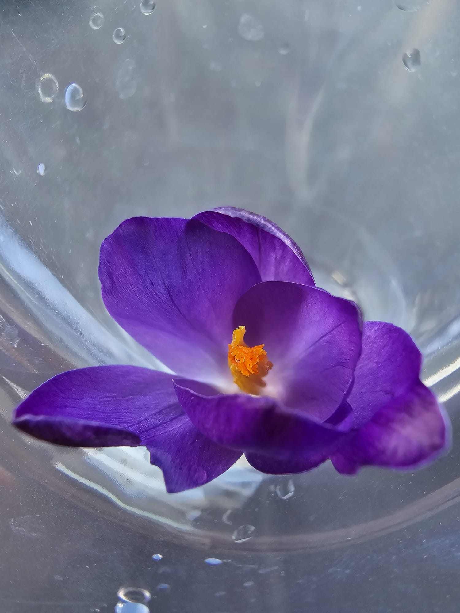

pe tarabe murdare anii curg despletiți
trec femei violet sau femei de amor
iarmaroc de plăceri printre pași decrepiți
și tăceri se-ofilesc și stejarii mă dor
se ascund oameni triști printre oamenii goi
risipiți printre răni ei tot plâng în pustiu
este toamnă din nou este veșted în noi
și un tren infinit taie noaptea în viu
din orașul amar curg bețivi rătăciți
gem tramvaie-n rugini despicând doar dureri
emigranți dorm pe trepte doar în vânt înveliți
și mi-e sete de tine și mi-e foame de ieri
curg din putrede nopți clipe reci clipe gri
răsfoind amintiri doar un vag deja-vu
îmi străbate prin visuri o iubire sau nu
ești departe sau poate doar o toamnă de-o zi